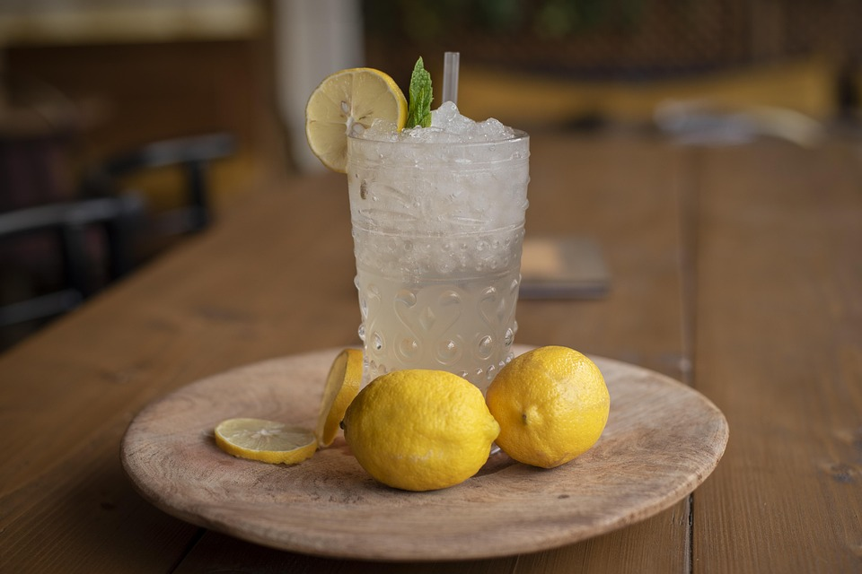

Return to recipes
Best Homemade Lemonade Ever
These air fryer hot dogs in toasted buns turn out perfectly crisp in minutes with the help of your air fryer.
Top with ketchup, mustard, relish, chili, or condiments of choice.

Ingredients
- Sugar and Water
- Lemon Juice
- Ice
Directions
- Juice Your Lemons. Start by firmly rolling the lemons around on the counter.
This will help release the juices and make your job a lot easier. Cut the lemon in half crosswise, then squeeze out the juice by hand or with a juicer.
Make sure to juice the lemons over a large measuring cup so you can see exactly how much liquid you have.
- Make a Simple Syrup. It's shockingly simple to make simple syrup on the stove.
Just combine sugar and water in a small saucepan, bring the mixture to a boil, and stir it until the sugar is dissolved.
- Stir. Pour cold water into a pitcher. Stir in lemon juice and pulp, then add simple syrup to taste.
- Serve. Serve over ice. If you're feeling fancy, garnish each glass with a fresh lemon slice or a candied lemon peel.
Notes
Store homemade lemonade in the fridge for about 5 to 7 days without ice.
Since ice will dilute the mixture, it's best to add it right before serving.
If the lemonade is in an open pitcher, cover it with storage wrap for maximum freshness.